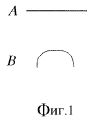
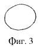
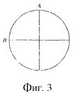
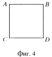

Беседа 2081 от 3877 · Беинса Дуно
Перпендекулярно отношение
„Отче наш"
Имате ли зададена тема? - (Имаме.)
Сега аз съм от друг свят, не разбирам какво е добра и лоша постъпка. Какво разбирате, какво е добра и какво е лоша постъпка. Чудна работа, нали това е правата постъпка (фиг. 1 - А). Де е лошото, че е крива постъпката (фиг. 2 - В)?

Подобни извлечения имаме ако лицето е дълго или ако носът е дълъг. Има общи положения, които са верни. Но въпросът е за дължината на носа. Дългият нос означава интелигентен нос, а късият нос всякога означава повече чувства. Такава голяма интелигентност няма в късия нос. Но каква е дължината, дължината не е определена. Онези, които са определяли, не са определили коя е оная малка дължина на носа, дето започва носът, за да покажат, че този е един умен човек. Носът е специфично построен у хората, които са умни. Има известна дължина. Но сега онези, които измерват лицето, нямат абсолютната мярка, с която се мери. Откъде започва нормата, с която се мери човешката интелигентност. Защото, за да бъде носът интелигентен, той трябва да има няколко качества.

Този пергел, който прави кръга по-хубаво от мене, той по-учен ли е от мене? Той не направи кръга, но аз си послужих с този пергел.
Сега какъв е далечният извод? Вие не правите далечни изводи. Ти прокарваш известна теория. Но тази теория не си я създал, ти си чел и се захващаш да обработиш, да развиеш нечия теория. Питам: След като си развил теорията и доказваш тази теория, след като я доказваш, по-учен ли си от онзи, който е създал теорията? Не, но я разбираш. Или другояче казано, имате един развит желъд и един желъд като зародиш на развитие. Желъдът е образувал едно голямо дърво. Кой е по-умен - развитото дърво или желъдът? Сега могат да се намерят много причини, да се обясняват. Може да кажете, че развитият желъд е по-умен от неразвития. Но как така? Ако мислиш, че неразвитият желъд не е толкова умен, тогава как е възможно това, което не е толкова умно, да се развие и умно да стане. Според теорията на Дарвина от нисшите организми се развиват висшите. Може ли в един човек да се развият известни качества, които не са съществували в самия зародиш? Как мислите, възможно ли е? Възможно е да се явят в известни дървета качества, които не са съществували в зародиша, но как ще обясните отделните случаи. Отивате при някоя праскова или при някоя слива и виждате, че там растат на едно и също място и праскови, и сливи. Как ще си обясните? Присадени са. Но в закона на присаждането има едно изключение. Кое на кое се присажда? - Семка на семка и костилка на костилка. Ако присадиш семка на костилка, нищо не става. Някои от вас занимавали ли са се с градинарство?
Следователно, щом разгледате човешкия живот в самия зародиш, какво се крие в човека. Казвате: Този човек върви по един естествен път, по правилен път на развитие. Но когато у него се явят някои черти, които ги няма в семето на самия човек, в човешкото естество ги няма, не прииждат отвън, ние виждаме, че те са присадени. За пример вземете чувството на страх. В най-напредналите същества, в съвършените същества има чувство на страх. Да ви дам един пример. Във водата има ли страх, че може да се счупи? Само за обяснение: имате едно гърне. Може ли да кажете, че в него има страх? Издаването на известни звукове показва, че има известна възможност. За пример вземете една стомна. Ако стомната е празна и я почукаме, тя издава известен тон. Ако напълните стомната и почукате, този тон е по-тъп, нали? Като почукате, звукът е тъп. Също така и динята преди да е узряла, е като стомната. Като я чукате, кънти, после като узрее, като почукате, звукът е тъп, показва, че динята е узряла. Имате два звука - първият звук е ясен; звукът на динята показва много страх, че може да се счупи. Вторият звук, тъпият казва: „Аз никога не се чупя, където и да ме хвърлите, каквото и да направите, не се чупя." Но какво става с водата? Вместо да се чупи, тя се разлага. Щом като легне на земята, вие вече не може да я намерите, където и да я турите. Но ако начупите една стомна и я хвърлите на земята, какво ще направи? Следователно от стомната и водата, от счупената стомна и от разлятата вода хората изваждат две правила. Кои са тези правила, които всеки един от вас употребява. Първото правило, което извадил човек: като направиш една погрешка, за да се избавиш от нея, ти ще се скриеш, ще употребиш метода на водата.
Праведният човек не прави погрешки. Той употребява системата на стомната, казва: „Аз не се крия." Някъде той ще остави или счупено или несчупено. Казва: „Нека ме знаят." Стомната, щом се счупи, може да остане вън, а водата, като се разлее, ще се скрие. Ако един праведен човек направи погрешка, той ще употреби метода на стомната. Ако е неправеден човек, ако е грешен или ако е страхлив, той върви по пътя на водата. Праведният върви по положението на счупената стомна. Има отношение между туй, което се чупи, и туй, което се разлива. Има една допирна точка, ако разумният човек, е казал на стомната да се примири. Какво примирение може да има между един лош човек и един добър човек? Изваждам пак едно правило: Водата, която се крие, е лошият човек. Праведният човек е, който се чупи. Той единствен се чупи. Тогава, за да не се разлива водата и да не се чупи стомната, турете водата в стомната. Ще турите лошия човек и праведният ще го пази. Защо ще го пази? За да не се разлива. Защо с лошият човек? - За да не се чупи. Тогава изваждам правило: Защо трябва да ставаш лош? - За да не се чупиш. Но защо трябва да ставаш праведен? За да не се разливаш. Схващате ли право защо той е станал лош и защо е станал праведен. Той е станал лош, за да не се разлива, а защо е трябвало да стане праведен? Водата се разлива. А за да не се разлива водата, той трябва да бъде в стомната. Нали като направиш една погрешка, ти искаш да се скриеш някъде. Лошият човек винаги се крие, а праведният казва: „Трябва да си призная погрешката."
Ние искаме да примирим нещата, за да не се разливат и да не се чупят. Тогава водата трябва да бъде в стомната.
А къде трябва да бъде стомната? Водата трябва да бъде в стомната, а стомната трябва да бъде около водата. Слушайте сега: Ако турите една празна стомна във водата, ще се счупи ли? Няма да се счупи никога, понеже водата е пластична. Ако влезеш при един лош човек, ти не може да се счупиш. Влезеш между праведни, ти може да се счупиш. Една стомна между другите стомни има възможност да се счупи. Ако един праведен човек влезе между лошите хора, те ще го държат като писано яйце. Един човек между лошите хора - те с години го чакат - може да бъде почтен гражданин. Същото нещо е, когато един лош човек дойде между добрите хора. Те го гощават и той е особен екземпляр. Сега вие не може да си представите защо е така. Че така е в света. В турско време, като дойде едно заптие или някой съвременен началник или някой мирови съдия - мировият съдия в турско време се наричаше кадия, като дойде той, веднага българите се разтичат, показват, че имат нужда от него. Те ще го нагостят хубаво, защото един ден ще имат нужда от него. Като го угощават, той се счита задължен някой път и той да услужи. Та българите услужваха на турците от страх, че ще имат нужда от тях.
Сега да оставим тези работи какво е било между българите и турците. От една случайност какъв закон можем да извадим? От много случайности можем да извадим едно правило. От много правила какво може да извлечете? Какво правят много правила? От много правила се образува един закон. Колко правила трябват, за да се образува един закон? Имате единица. Тази единица колко пъти трябва да се умножи, за да стане цяло? (4 пъти.) Може да питаме, защо четири пъти трябва да се умножи. Сега трябва да доказвате. Тъй е, щом се умножи 4 пъти, тогава имате единица. Имате едно цяло число. Каква е разликата между цялото и частите?

Във всичката съвременна наука, дето участвува човешкият дух, това са изводи, методи. Геометрията и математиката, това е език на природата. Всеки един от вас, който иска да изучава природата - няма по-добър начин от геометрията и математиката. Това са начини, пътища, по които вие може да изучавате живата природа. Тези линии, фигури, кръгове и сфери, които съществуват, трябва да се оживят, трябва да бъде първо ясно, понятно на вас. Какво нещо е точката? Какво нещо е правата линия? Какво нещо е повърхнината? Какво нещо са успоредните линии. Какво нещо е триъгълникът, четириъгълникът, петоъгълникът, шестоъгълникът, сферата? Какво представя една правилна фигура, елипсата, параболата, хиперболата и т. н.? Това са съчетания, вие трябва да ги изучавате, тъй както музикантите изучават известни тонове. От седемте тона се образува цяла музика. Седемте тона с повторение, имате и спомагателни знаци диези и бемоли - те образуват цялата сегашна музика.
Да допуснем сега, че в музикално отношение имате тона ми. Той е най-правилен тон. Кой следва ми? В гамата има известни съчетания. Ако вземете ми или ре, кой тон трябва да вземете след ре. Може да кажете след ми да вземете ре. Но само при известни условия може да се вземе ми. Щом вземеш тона ми, той поражда мисъл у тебе. Искаш да реализираш тази мисъл на физическото поле. Ако този тон трепти в теб, умът ти се проявява. Ако не мислиш и искаш да я приложиш на повърхнината, ти ще се върнеш назад, няма да вървиш напред. Ще вземеш ре. Тогава може ли някой да вземе ми и ре назад. Може да се вземе. Ако вземете ре сега, показва, че нещата са на физическия свят. Ти искаш да се индивидуализираш след ре. Ако тази работа е оформена, има плод. Кой тон ще вземеш сега?
Тогава представете си, че един студент, който е в училището, казва: „Нямам си парици!" Той не се плаши, но констатира факта. Писал едно писмо на баща си, писмото иде и парите носи. Какво ще кажете вие? Я ми дайте тона ми. Дайте ми е. Дойдоха парите. Сега той е радостен, иска да купи нещо за обяд. Кой тон трябва да дойде сега? Отворил се широко, ще дойде ла. Тя е щедра, иска да се покаже. Като срещне другарите си, той е радостен, весел. Той пее ла. Казва: „Нямаш парици." Ре - дойдоха парите. Сега ще ядем, ще пием, ще вземем тона ла. Но всякога в живота, когато човек води един естествен живот, в него всичките мисли, които се явяват, се явяват в известни музикални тонове. Трябва да знаеш откъде започва всяко едно приятно чувство в тебе. В началото това чувство проявило ли се е? Ще се прояви ли? Ще мислиш върху известни работи. Или сполуката в живота зависи от тона кой тон ще вземеш. Защото, ако започнеш една работа в ре, в началото ти няма да я свършиш. Тя е много добра работа. Природата винаги започва с един мек тон. Или всяка сполука в света трябва да започне с най-малко съпротивление. Сполуката в живота винаги върви по пътя на най-малкото съпротивление. Човекът, който е в Божествения път на най-малките съпротивления, той ще сполучи. Накрая той ще се обезсили. Следователно резултатите, които ще постигне, няма да може да го ползуват. Умният ще започне с най-малките съпротивления, че да има достатъчно сили да използува, каквато и мъчнотия да дойде. Тогава, като имате някоя мъчнотия, вие ще разрешите въпроса, но накрая вие ще се усетите така обезсилен, че няма да ви ползува вашето разрешение.
Помнете друго едно правило, което съществува - че зад всичките мъчнотии, побуждения, които човек има, каквото и да е материално побуждение, какъвто и да е подтик, каквото и да е намислил, зад туй седи една велика разумност. Каквото и желание да имаш, зад всяко желание, зад всяка постъпка в природата седи една разумност, която подтиква туй движение. За пример вие виждате, че се движи цял един трен. Има един машинист, който ръководи този трен. Но кой ръководи в дадения случай обществото, държавата?
Най-първо трябва да знаете - в света има четири цифри. Четири пъти може да преведете туй правило. Една четвърт веднъж; ако умножите на цялото, ще получите цялото. В имагинерните числа, ако умножите едно въображаемо число четири пъти само на себе си, ще се получи цялото.
Най-първо вие имате едно желание, но за да се постигне каквото и да е желание в геометрическа форма, вие сте един център. Центърът А е индивидуалният живот - сега да обясним теорията, която седи там. Това са сега ми и ре това са фа и ми. За да се постигне каква и да е постъпка в света, вие трябва да се поляризирате. Ще имате тогава АВ - правата линия, то е посоката. Правата линия -вие сте се поляризирали. АВ - това е човекът, поляризиран. Туй е първото положение. Второто положение, то е посоката около вас. Третото положение, това е държавата и тя се налага. Зад държавата седи четвъртото положение, което наричаме Бог, който регулира всички неща. Най-първо онзи в тебе, който работи, ще се поляризира, след туй иде обществото, после държавата и най-после иде Божественото в света, то образува цялото - четири пъти около себе си. Ти трябва да вземеш четири неща: първо ти, после окръжаващата среда - обществото, след туй трябва да вземеш предвид държавата и най-после трябва да вземеш живата природа, или Бог, Който е в центъра. Бог в дадения случай е пътят, целта, която има всичко в себе си. След Бога ти нищо не може да имаш. Ще имаш известни постижения. Ще имаш постижението на правата линия, ще имаш постижението на плоскостта, после ще имаш постиженията на куба и най-после ще имаш постиженията на тесаракта! Тогава бих употребил кривата линия. В дадения случай, в нашето триизмерно пространство, кубът е като емблема на тесаракта. Затова се туря кръга и се казва криволинеен кръг. В нашия свят той е кръгът, а в четириизмерното пространство има съвсем друго отношение. Ако този квадрат го завъртите около своя център, какво ще образува? Кръг ще образува, нали? А неговите страни са плътни. Следователно той трябва да има четири допирни точки. Единствените точки в квадрата, това са четирите точки, на които може да разчитащ (фиг. 4).

Та казвам: Не е само в отражението. Да кажем, даден човек е умен човек. Аз разбирам неговата глава. Но той е много добър човек - разбирам неговото сърце. Ама той е много силен - разбирам неговата мускулна сила. И още нещо трябва. Той трябва да живее в едно единение с Бога. Той може да има ум, за да мисли, изисква се широк свят, тяло, дробове за да диша - трябва въздух, който постоянно да приема. А тази сила трябва да има материя, с която да работи. Сега по някой път вие се заблуждаваме от нещата. Седим и казваме: „Няма Господ! То е празна работа." Но не може да разсъждаваме. Да ви приведа един пример. „Няма Господ" какво означава? Един адепт взел едно дете, да направи един опит. Той взел детето и му внушил, че човек сам се ражда, че вън от него нищо не съществува. След години, когато детето станало на 21 години, идва баща му и му казва, че той му е баща. - „Не може - казва - аз от само себе си се родих." А бащата счита, че има знание, че туй, което детето говори, не е истина. Разумната природа, която те е създала и на която ти дължиш, ти седиш и казваш, че тя е празна работа. Там е възпитанието. Учените хора му доказват, че има баща, то казва: „Нямам никакъв баща. Аз не го признавам." В природата се изискват само пет минути, за да ви докажат нещо. Ако те турят на въжето и те стегнат, моментално ще ти покажат, че има нещо добро, без което ти не може да живееш. Хубаво, ако ти си самостоятелен, ако няма нищо, ако ти си единственият фактор, тогава ти нямаш нужда от въздух, от вода, от хляб, най-после нямаш нужда да мислиш. Но има четири неща, които са необходими, без които човек не може. Животът започва с човешката мисъл, животът започва с човешките чувства, животът започва с човешката сила и най-после животът е свързан с туй, което е проявило цялото тяло на човека, което е резултат на една разумна материя. Цялото тяло във нас показва онова, което Бог е създал. Никой да не казва, че аз нищо нямам. Имаш едно тяло, ти си собственика! Тогава туй тяло има една глава, едно сърце, дето са чувствата, мускулите, дето е силата, и най-после цялото тяло е неговото отношение. Щом имаш едно тяло, ти можеш всичко да постигнеш. То ти е дадено вече. Няма какво да се обезсърчаваш. В какво се състои човекът? Твоето тяло - то всичко може да постигне. Следователно и хляб ще има, и вода, и общество. Следователно може да бъдеш учен, силен, богат. Всичко може да постигнеш, но трябва да спазваш други закони. Идеята във вас трябва да бъде строго определена. Защото когато се казват тези идеи, не знаете защо се казват.
Ти казваш: „Има Господ, има нещо в света." Бог е туй, без което ти не можеш. За Бога ти не може да мислиш. Ти Бога не може да Го чувствуваш. Ти не може да живееш вътре в Него. Той ти е дал всичките възможности. Ти в себе си може да чувствуваш присъствието на Бога, но никога не може да си съставиш една идея какво нещо е Бог. Защото както и да Го представиш, ще Го представиш в онзи резултат, който Той ти е създал. Бог е, Който е създал тялото. Ти винаги ще си Го представяш и резултат. Този резултат съставя четири положения. Първо, да вярваш в Бога подразбира, че ти трябва да мислиш. Ти, за да вярваш в Бога, трябва да чувствуваш. Ти за да вярваш в Бога, трябва да имаш сила, ти трябва да имаш едно тяло и да си господар на това тяло - това е волята. Следователно всичко туй ще го туриш на опит. Може да опиташ, че действително има една разумност в света, в която ти живееш, от която зависят всички твои постъпки. Не си ти единственото разумно същество, зад тебе седят милиони разумни същества, много по-разумни, отколкото си ти. Всички те работят. Не че те мислят само за тебе, но те имат предвид твоето благо. Някой път вие не може да си представите защо мислят заради вас. Когато вашият малък пръст е здрав, вие никак не мислите за него, даже не мислите, че на крака си имате малко пръстче. Здраво ви е, никак не мислите за него. Но един ден ви заболи малкото пръстче, обръщате внимание, милвате го, вие постоянно се грижите за малкото пръстче, защото почвате да съзнавате, че от това малкото пръстче много зависи. За тия разумни същества пожеланието за постижение е едно благо. Когато ние искаме да постигнем нещо, за тия разумни същества е една болка в техния крак и, за да се избавят от тази болка, те го направят. За нас това е постижение. Когато ние искаме да постигнем нещо, то за тях е болка и ще превържат болката, ще турят мехлем. Тия мехлеми са едно благо за нас. Тази превръзка за нас с едно постижение. Казваме: „Добихме нещо." То е само във фигуративен смисъл.
Искам да ви покажа защо вашият живот седи на радиуса при сферата над вас и ако вие вървите по този правилен път, може всичко да постигнете по пътя на бързото съпротивление. За вас, за вашите другари, за вашето общество, за Бога, то са четири положения, които трябва да имате. Здрава глава, дробове, стомах (ние го наричаме банкерин, касиер на Бога) и най-после Божественото, туй ние го наричаме вътрешна връзка. То е Божествената възможност на всички твои постижения. Ако така седи идеята във вашия ум, вие няма да се нервирате. Някой път се заражда борба, хората се борят един с друг. Тук практически има една идея. Как ще ми представите практически тази идея. Практически как ще ми докажете в живата геометрия? Как ще ми докажете де е правата линия, де е плоскостта, де е триизмерното пространство в геометрията, но в живата геометрия. Казвате: „С ума си го разбирам." Не само с ума си да разбираме, но и сърцето и ръцете да го разберат, всички около мене да го разберат. Сега както се разправя за този кръг, има нещо неясно. Как ще го разправите, че да бъде ясно и за ума ми, и за сърцето ми, и за силата ми, пък и тялото ми да го разбере. Ето аз как бих го показал. Представете си, че вие сте вързан. Срещате един човек, който е крайно енергичен, но е вързан. Разбойниците са го съблекли гол-голеничък и му вързали ръцете и краката и той не може да се обърне. Иска му се да покаже, че има четириизмерно пространство. Най-първо изваждам един нож, разрязвам въжето. Образувам една връзка между него и себе си. След туй второто положение, казвам: „Стани сега." Той е благороден, но е гол при мене. Но той за хората ще бъде облечен. Аз му давам дрехи, обуща, шапка и той се облича като мене. Този човек е седял няколко дена гладен. Завеждам го вкъщи и той, и аз сядаме да ядем. Най-после завеждам го в църква и двамата се молим на Бога да ни помогне да свършим една добра работа. Завеждам го на леглото в стаята, да иде в оня свят да си почине. Спането според мен е едно доказателство, което само нищо не може да докаже. Що е спането? Отиване при Онзи, Който ни е създал. И аз се явявам и казвам: Днес освободих един човек там и там. Той се явява и казва: „Аз съм много благодарен." И аз благодаря на Бога, и той благодари на Бога. Образува се вече една връзка между нас. Той има една ясна представа. Аз му казвам: Ще идеш при моите домашни. Но и аз отивам на главната станция. Той и аз отиваме на главната станция. Коя е главната станция - кревата. Там като идеш, какво положение трябва да вземеш? Винаги ще легнеш в едно почивателно положение. Ако искаш добре да спиш, краката ти трябва да бъдат успоредни, не прекръстосани. Не си преплитайте краката, когато спите. После много пъти като легнете на лявата страна, туряте си дясната ръка на лявата или обратно. Хубавото спане е, когато легнеш на кревата, тури ръцете си успоредно и краката си успоредно и да има едно малко помръдване на краката. Работата е добре свършена. Успоредни трябва да бъдат ръцете. Ще оставиш да работят онези, които се занимават с тялото, понеже като излезеш от тялото, ти ще имаш достатъчно слуги да работят. Като присъствува господарят, всичките слуги треперят, не са свободни. Пък като излезе господарят, слугите вече шетат, те си поправят работата. Но ако господарят не излезе, слугите не си вършат свободно работата. Защото той все прави забележки. От тялото си трябва да излезеш, да не правиш забележки на слугите си, да ги оставиш свободни.
Та сега, дето вие не сполучвате, вие не оставяте вашите слуги да си гледат работата, както трябва. Някои са станали господари не само на себе си, но и на своите слуги. Вие искате да станете господари на цялата природа, че каквото искате, да стане. Тази идея във вас е много едностранчива. Не е само вашето прошение, но има милиони същества, които дават своите заявления; и те се молят на Бога за нещо. Че колко заявления има дадени? Всички те трябва да се разгледат поред. Ти искаш изведнъж, в пет минути; пък твоята работа, едно малко заявление, докато се разреши, изисква най-малко една година. Или само за разяснение. Да приемем, че някой може да каже тъй: „Моята работа лесно може да се разреши. Може би ще се разреши първа." Ако твоята работа се свърши, значи е била най-важната. Ако някой път нашите желания изостанат, те не са толкова потребни. Което бързо стане, то е най-потребно. Туй, което е необходимо, ти винаги ще го имаш. Въздуха, който аз дишам, всякога го имам, водата, която пия, хляба - имам ги. Но ако имам желание да имам едно камилско перо на шапката, то трябва да пратим някого в Африка да го донесе. В България има ли камилски пера? Има, мисля.
Или някой от вас иска да стане музикант. Някои от вас, както ви гледам, ръце нямате, уши нямате, дълго време трябва да работите, докато станете гениални музиканти. Колко време има да се чукат тия пръсти! Може да имате много хубаво разбиране, но трябва да имате техника, за да предадете онзи тон. Теоретически може много правилно да разбирате музиката, но да проявите, да разберете смисъла на този тон, не е лесна работа.
Я ми изпейте един тон сега на мене, толкова бистър тон, та да ми трепне сърцето.
Представете си, че вие отивате на училище. Казвам: На тебе ти трябват четири тона. Ако може да ги вземеш, изпита ще вземеш с 6. Та има тонове, които трябва да вземаме вярно. Ти трябва да знаеш този тон, на който е нагласен него ден професорът. Има известни гами, ще трябва да знаеш на каква гама е нагласен. Я си представете, че на този професор синът или дъщерята са казали нещо и той е неразположен. Идва разгневен, някакъв поглед има. Ти се изпречиш отпреде му и той те скъса изведнъж. Ти сега именно трябва да се нагласиш, трябва да нагласиш своята постъпка в противоречие на неговата. Не да усилиш у него една неприятност, но така да му се усмихнеш, та той да забрави всичко, да кажеш: „Много добър е той." Ти като си разположен, и той ще се разположи като тебе. Ти си махнал една мъчнотия, една тъга, която е имал, и той ще каже: „Има нещо улегнало, разумно в този." Казва: „Не бой се, не е мъчна работа." Той ще ти даде една лесна задача. Ти отиваш при професора, но не се нагласиш и казваш: „Каквото Господ даде." Аз ще ти кажа какво Господ ще даде: той ще те скъса. Ти ще учиш и на този професор ще знаеш каква му е болката, ще му занесеш един мехлем. Ти, като го погледнеш, да му дадеш известно разположение. Ама защо са дадени очите на човека! Чрез магията на светлината. Вашите очи са едно отражение. Даром сте взели, даром давайте. Като погледнеш, да се отрази светлината. Нека стане едно отражение на светлината, туй значи светлина. Нека стане едно отражение и на човешката сила. Изобилно ще трябва да дадеш. Ако ти постоянно отразяваш Божественото, непременно някъде ще имаш успех в живота.
Та казвам: В тази школа се изисква един начин. Ти седиш, после влезеш в стаята и не знаеш как да се държиш; ти си държиш главата наведена наляво. Професорът ще каже: „Аз ще ти дам да се разбереш." Той ще ти каже: „Аз ще ти изправя главата." Защото този знак има и лоша мисъл. Когато човек си държи главата наляво, то е много лош знак. То казва: „Ти говори, колкото искаш, аз имам друга работа." Що означава отклонение наляво? Едно преобладаващо влияние на чувствата отклонява главата несъзнателно. То не си ти. Причината, която наклонява главата надясно, то е влиянието на силата. После някои си държат главата напред наклонена, някои назад наклонена. Ще държиш главата си точно перпендикулярна. Какво е перпендикулярно? - Божественото схващане в света, великото, разумното в света. Аз наричам перпендикулярно положение, като се поставиш в едно положение и гледаш на човека. То е свободно отношение. Какво разбирам под думата перпендикуляр? Той е беден, бос, окъсал се е. Аз го гледам, изследвам лицето му и мисля как да му помогна. То е перпендикуляр. Следователно тъй казвам: Елате с мен. Почвам да се разговарям с бедния човек. Туй е перпендикуляр. Създавам му работа, помагам му и т.н. Туй е перпендикулярно отношение. Туй наричам перпендикуляр в света. Божественото в мене функционира. Този човек е доволен и аз съм доволен. Туй е перпендикуляр - ни вляво, ни вдясно.
Та всякога, когато се обезсърчите в живота, поставете се в перпендикулярно отношение. Вие сте неразположени духом. Да ви дам един метод как да се обновявате. Няма да го туряте като правило. Представете си, че вие сте съвсем закъсали. Скъсал ви е професорът. (Понеже сте били ученици да ви бъде идеята достъпна) Представете си, в осмият семестър сте, скъсал ви е професорът. Сега новата мисъл. Представете си, че вие сте професор. Вие изпитвате другите студенти. Ако искате да се оправите, можете. Ставате професор, всичките студенти са наредени. Най-силните като дойдат, най-много ще изпитвате и им туряте бележка. Ще наредиш и скъсания студент. Колко студенти искате да изпитате? Вие сте професор, а искате да изпитате десет студенти - най-хубавото число. Сега вие сте професор, всички те са уплашени пред вас. Ти ще се обърнеш към тях, ще ги погледнеш. Ама тъй ще ги погледнеш, любовно, и ще дадеш на един същия въпрос. Тогава, като го изпиташ, ще вземеш неговото палто и ще го изпратиш. - Те са деца на любовта. След като ги изпиташ, всичките десет студенти на любовта ще кажат: „Този човек струва да бъде професор." Втори път като идете да държите изпит, по същия начин вие ще свършите. Сега вие ще ми кажете, знаете ли какво? Каквото онзи, на когото баба му казала: „Да ти бае баба, да те не яде мечка." - „Бабо, бай ми по-добре, никак да не ме среща." Това са изключения. По-добре професорът никак да не те скъса. Туй е най-правото, съгласен съм с това. Не казвам, след като те е скъсал, какво трябва да направиш. Това са опити, опитни правила, по които може да си помагате.
Та някой път вие се обезсърчавате, искате да заминете за другия свят, не искате да живеете. Няма какво да умирате. Стани някой професор, стани някой музикант виртуоз, да те слушат хората, или философ, да напишеш някое съчинение и пред него всички да седят и да се учудват на гениалния автор. Или стани един велик художник и нарисувай една велика картина. За предпочитане е тази глупост, отколкото да се самоубиеш. Всичко това хората го правят. След като минеш по този път на разсъждение, ти, като се върнеш в реалния живот, ще усетиш една лекота. Ще кажеш: „Слава Богу, имам за какво да живея. Станах професор, музикант, всичко станах. Ако сега не съм станал туй, един ден ще стана. Как ме радва това, аз съм кандидат за професор, кандидат съм за един красноречив оратор като Демостена."
Та казвам: Всички тия мъртви теории може да се преведат в една стройна наука. Ако аз ви пратя десет души за изпит и ви попитам, разбрахте ли онова, което казах, ще кажете: „Разбрахме много добре." Изпращам ви при един български банкер да поискате от него хиляда лева на заем без гаранция. Ако десет души от вас идат, които сте ме слушали, колко души ще вземат по хиляда лева? Нали предполагате? (Един най-малко.) Не зная дали ще има. Но има известни ученици, че не хиляда, но десет хиляди ще вземат. Има известни условия, при които вие ще имате вяра. Ще идете при банкера и ще кажете: „Вашата дъщеря е болна, аз ще излекувам дъщеря ви." Мислите ли, че този банкер няма да ви даде, колкото искате? И десет хиляди може да ви даде. Трябва да намерите оня момент, когато вие може да сте полезни. Следователно това е морал. Аз взимам полезността. Както аз съм полезен, така и вие сте полезни. Това е моралност. Полезен трябва да бъдеш. Природата разбира под полезност хора, които да изразяват нейните идеи, нейното богатство. Туй, което има, даром дава. Господ ти е дал очите. Не само за тебе са твоите очи. Добре е, че те ни служат. Но те не са за нас само. Някой път ще дойдат разумни същества и ще кажат: „Моля, може ли да ни поверите вашите очи за половин час, искаме да свършим една работа." Вие казвате: „Не днес, но друг път." След време пак ще дойдат и ще кажат: „Може ли да дадете очите си за един ден." Вие може пак да си намерите работа - да отлагате. Божественото никога не отлагайте. Защото зад всяка постъпка стои едно разумно същество, което [кея] кога може да бъде един приятел, един помощник. Не се ли отнесете добре, пренебрегнете ли туй същество, ще ви се даде един урок, че не сте постъпили любовно. Туй значи да използувате ония Божествени моменти, в които живеете. Та ще кажете: „Какво ще стане от нас?" Всичко може да стане. Най-първо всички може да станете добри работници във всички занаяти. Каквото занаятие искате, може да развиете. Те са спомагателни средства. Единственото нещо е да бъдем носители, а всички можем да станем. Защото всяка една възможност си има своето време. Нещата не стават случайно в света. За красноречивия оратор се изисква особен бюджет. За царя се иска особен бюджет. За художника се иска особен бюджет. За каквото и да е занаятие си има специфично време. Ако ти знаеш времето, може да постигнеш. Това е важно. В това време има специфично качество за учението, което може да постигнеш.
Та казвам: Пред вас седи един велик закон. Който не разбира живота, той ще се обезсърчи. Онези, които не разбират законите на природата, всякога се обезсърчават, а онези, които ги разбират, те всякога трябва да се учат от тях.
Аз приведох примера, че водата влиза в стомната. Казват: „Не дружете с лошите хора. Лошите хора, лошите общества развалят добрата храна." Така е, но може да се извади общо заключение. Лошият човек е лош в едно отношение, а в друго е добър. Един пиян човек върви по пътя, остават му стотина лева. Среща един беден човек, навел се, угрижен. Пияният го пита: „Къде си ходил?" - „Ходих да търся работа, но не можах да намеря." - „Аз попийнах, останаха ми сто лева, на, вземи ги." Върви той, пак се клатушка. Пияният върши волята Божия, а онзи, моралният, нищо не дава. Казва на бедния: „Добър е Господ." - И си заминава. Пияният казва: „Аз пих, останаха ми стотина лева." Бръква и ги дава. Не мисли какво ще стане с него.
Божествена черта е онази, която е отзивчива и за която не се изисква мисъл. Тя е една работа: даваш и не мислиш. След като направиш така, веднага усещаш една вътрешна радост. Така е в учението. Божественото е, като прочетеш каквото и да е, веднага ти е ясно. А някой път четеш, четеш и не можеш да разбереш. Божествената работа много лесно се разрешава. Но за да стане туй разрешение, всякога трябва да имате единство. Вярвайте в едно нещо - че зад всички неразбрани работи, зад всичко, което не разбирате, зад всички вредни и лоши работи седи една висша разумност в света, която използува всичко. Няма престъпление в света, каквото и да е, което природата да не използува. Знайте, всичко, каквото се случи в природата на онези, които любят Бога, е за добро. Всичко в природата, което се случва, в крайния резултат е добро. Това е съвършенството на Бога. Във всички противоречия се крие нещо добро за бъдеще. От лошото в света за нас ще излезе сполука за бъдеще. Така трябва да се мисли. Туй ви го давам като едно правило, за да не се обезсърчавате. И да се обезсърчите, обезсърчението да ви стане причина за по-голямо насърчение. Защото обезсърчението е една долина, а насърчението е един връх. След този връх ще влезете в друго обезсърчение, а след това друг връх седи. Противоречието е една възможност, а де е сполуката? Зад възможността какво седи? Зад всяка възможност седи сполука. Няма една Божествена работа, която да не свърши по Божествено. Няма по-голяма катастрофа за Христа от момента, когато Го хванаха; всички ученици се разбягаха. Те помислиха, че всичко се свърши. Но след три дена стана цял обрат в работата. Обрат стана и в живота на всички тези обезсърчени хора - апостолите. Те се събраха и станаха толкова смели, че света победиха. Тия, които се разбягаха, тия обезсърчени хора помислиха, че всичко се свърши, но след три дена Той се яви такъв млад и сега Той има 500 милиона последователи. Че може би ти си изгубил дрехата си, останал си, нищо не знаеш, не си отишъл до възкресението. А възкресението разбира делата на Божественото. Като видиш, че зад тебе седи един Божествен промисъл, една Божествена разумност, в която няма никакво изключение, тогава вече нещата са постигнати. Щом тази вяра се яви на човека в душата, нещата са постижими.
„Само светлият път на Мъдростта води към Истината. В Истината е скрит животът."
7 лекция от Учителя, държана на 15 декември 1933 г., София, Изгрев.